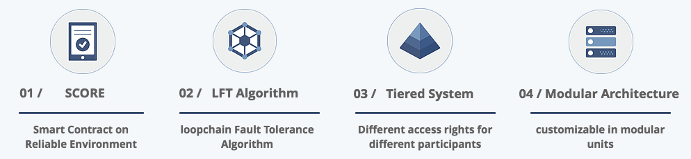

loopchain Documentation¶
{kind=link}
loopchain은 효율적인 Smart Contract를 기반으로 실시간 거래를 지원할 수 있는 고성능 블록체인입니다.
이 문서는 크게 3개의 세션과 참조 문서들로 구성되어 있습니다:
- loopchain 소개
- 설치 Tutorial
- score-docs
참조 문서는 다음의 링크를 참조하시면 됩니다:
loopchain 소개¶
설치 Tutorial¶
SCORE(Smart Contract On Reliable Environment)
Reference¶
- RadioStation - RESTful API
- GET /api/v1/peer/list?channel={channel_name}
- GET /api/v1/peer/leader?channel={channel_name}
- GET /api/v1/peer/status?peer_id={Peer의 ID}&group_id={Peer의 group ID}&channel={channel_name}
- GET /api/v1/conf
- GET /api/v1/conf?name={Configuration 이름}
- POST /api/v1/conf
- GET /api/v1/cert/list/ca
- GET /api/v1/cert/list/peer
- GET /api/v1/cert/issue/ca
- GET /api/v1/cert/issue/peer
- Peer - RESTful API
- GET /api/v1/status/peer?channel={channel name}
- GET /api/v1/status/score?channel={channel name}
- POST /api/v1/query
- GET /api/v1/transactions?hash={찾으려는 트랜잭션 해시}&channel={channel_name}
- GET /api/v1/transactions/result?hash={찾으려는 트랜잭션 해시}&channel={channel_name}
- /api/v1/transactions
- GET /api/v1/blocks?channel={channel name}
- GET /api/v1/blocks?channel={channel name}&hash={찾으려는 블록 해시}